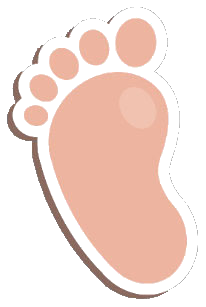

<!DOCTYPE html>
<html lang="en">
<head>
	<meta charset="UTF-8">
	<meta name="viewport" content="width=device-width, initial-scale=1.0">
	<meta http-equiv="X-UA-Compatible" content="ie=edge">
	<title>Footprint</title>
	<script src="https://ajax.googleapis.com/ajax/libs/jquery/3.3.1/jquery.min.js"></script>
	<style>
		.container {
			height: 350px;
			padding: 0 40px;
			background: url('img/sand.jpg');
		}
		.content {
			width: 60px;
		}
		.content img {
			width: 100%;
		}
		.content-up {
			transform: rotate(60deg);
		}
		.content-down {
			transform: rotate(110deg);
			margin-left: 80px;
		}
		#box-up,
		#box-down {
			padding: 40px 0;
			font-size: 0;
		}
		#box-up div,
		#box-down div {
			display: inline-block;
			font-size: 12px;
		}
	</style>
</head>
<body >
	<div class="container" id="root">
		<div id="box-up">
		</div>
		<div id="box-down">
		</div>
	</div>
	<script>
		var widthRoot = $('#root').outerWidth(),
			widthNode = 0,
			i = 1,
			marginLeft = 100,
			marginLeftFirst = 80,
			length = 0,
			contentUp = '<div class="content content-up"></div>',
			contentDown = '<div class="content content-down"></div>';
			
		function addNode() {
			if (i === 1) {
				$('#box-up').append(contentUp);
				setTimeout(function(){
					$('#box-down').append(contentDown);
				}, 500);
				widthNode = $('.content-up:first-child').outerWidth();
			} else {
				var cloneContentUp = $('.content-up:last-child').clone();
				cloneContentUp.css({'margin-left': marginLeft});
				$('#box-up').append(cloneContentUp); 

				setTimeout(function(){
					var cloneContentDown = $('.content-down:last-child').clone();
					cloneContentDown.css({'margin-left': marginLeft});
					$('#box-down').append(cloneContentDown); 
				}, 500);
			}
			i++;
			length = (widthRoot - widthNode - marginLeftFirst) / (widthNode + marginLeft);
			if (i > length) {
				clearInterval(myFunc);
			}
		}

		var myFunc = setInterval(addNode, 1500);

	</script>
</body>
</html>